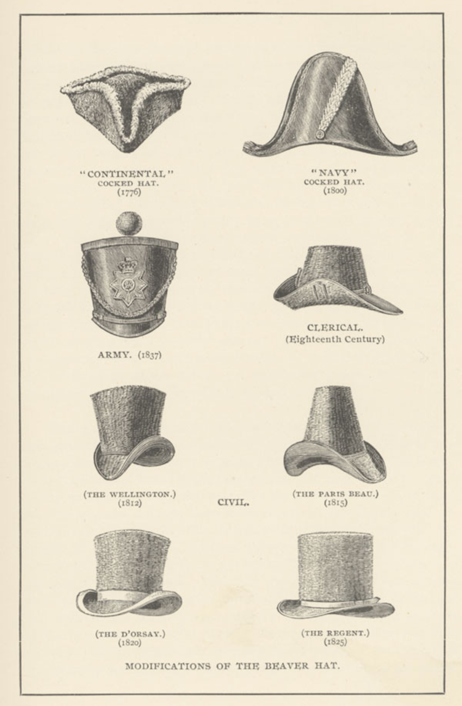

Archaeologists think that the Venus of Brassempouy from 26,000 years ago may depict a hat. One of the earliest known confirmed hats was worn by a bronze age man (nicknamed Ötzi) whose body (including his hat) was found frozen in a mountain between Austria and Italy, where he'd been since around 3,300 BC. He was found wearing bearskin cap with a chin strap, made of several hides stitched together, essentially resembling a Russian fur hat without the flaps.
One of the first pictorial depictions of a hat appears in a tomb painting from Thebes, Egypt, which shows a man wearing a conical straw hat, dated to around 3200 BC. Hats were commonly worn in ancient Egypt. Many upper class Egyptians shaved their head, then covered it in a headdress intended to help them keep cool. Ancient Mesopotamians often wore conical hats, or ones shaped somewhat like an inverted vase.
Other early hats include the Pileus, a simple skull like cap; the Phrygian cap, worn by freed slaves in Greece and Rome (which became iconic in America during the Revolutionary War and the French Revolution, as a symbol of the struggle for liberty against the Monarchy); and the Greek petasos, the first known hat with a brim. Women wore veils, kerchiefs, hoods, caps and wimples.
Like Otzi, Tollund Man was preserved to the present day with a hat on, probably having died around 400 BC in a Danish bog, which mummified him. He wore a pointed cap made of sheepskin and wool, fastened under the chin by a hide thong.
St. Clement, the patron saint of felt hatmakers, is said to have discovered wool felt when he filled his sandals with flax fibers to protect his feet, around 800 AD.
In the Middle Ages, hats were a marker of social status and used to single out certain groups. The 1215 Fourth Council of the Lateran required that all Jews identify themselves by wearing the Judenhat (“Jewish hat”), marking them as targets for anti-Semitism. The hats were usually yellow, and were either pointed or square.
In the Middle Ages, hats for women ranged from simple scarves to elaborate hennin, and denoted social status. Structured hats for women similar to those of male courtiers began to be worn in the late 16th century. The term ‘milliner’ comes from the Italian city of Milan, where the best quality hats were made in the 18th century. Millinery was traditionally a woman’s occupation, with the milliner not only creating hats and bonnets but also choosing lace, trimmings and accessories to complete an outfit.
A hat shop from about 1900 inside the Roscheider Hof Open Air Museum In the first half of the 19th century, women wore bonnets that gradually became larger, decorated with ribbons, flowers, feathers, and gauze trims. By the end of the century, many other styles were introduced, among them hats with wide brims and flat crowns, the flower pot and the toque. By the middle of the 1920s, when women began to cut their hair short, they chose hats that hugged the head like a helmet.
The tradition of wearing hats to horse racing events began at the Royal Ascot in Britain, which maintains a strict dress code. All guests in the Royal Enclosure must wear hats. This tradition was adopted at other horse racing events, such as the Kentucky Derby in the United States.
Extravagant hats were popular in the 1980s, and in the early 21st century, flamboyant hats made a comeback, with a new wave of competitive young milliners designing creations that include turban caps, trompe-l'oeil-effect felt hats and tall headpieces made of human hair. Some new hat collections have been described as "wearable sculpture." Many pop stars, among them Lady Gaga, have commissioned hats as publicity stunts.
Source: Wikipedia